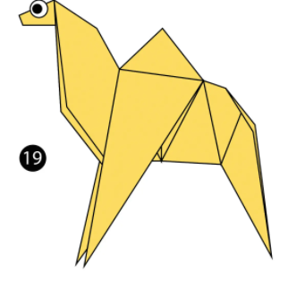
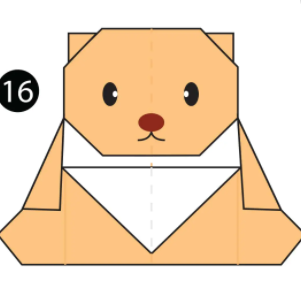

My name is ROHINI SHARMA. I study in class 7. The name of my school is Shiva International School, Ghumarwin. I am doing coding in White Hat Jr, and the language I have learnt in the past 48 classes is Javascript. I have designed some games which I will be showcasing here.My friend Palak is also doing coding in White hat jr.
 Step 1) Fold the paper in half.
Step 2) Fold the paper in half again.
Step 3) Open the top flap of paper over to the right.
Step 4) Squash Fold this flap down.
Step 5) Turn the paper over.
Step 6) Open the top flap of paper over to the left and Squash Fold it down.
Step 7) Fold and Unfold the sides and the top along the dotted lines. You’ll use these creases in the next step.
Step 8) Open up the top layer of paper and fold it up using the crease from the previous step.
Step 9) Fold in both sides along the existing creases making a Petal Fold.
In this game the batsman has to hit the ball hard so that he can score runs, and if he scores a maximum of 60 runs he wins.
In this game we will be calculating gravity and depending upon the different surfaces, the astranaut will jump to the certain height.
In this game we will be calculating gravity and depending upon the different surfaces, the astranaut will jump to the certain height.

In this game we will be calculating gravity and depending upon the different surfaces, the astranaut will jump to the certain height.

In this game we will be calculating gravity and depending upon the different surfaces, the astranaut will jump to the certain height.